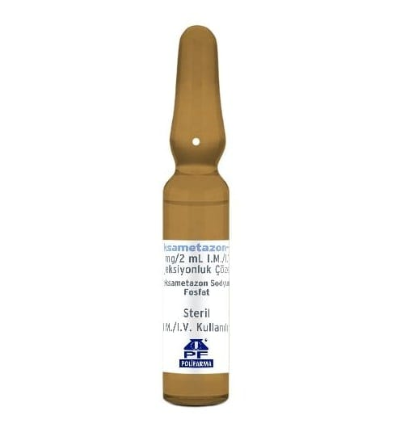

Deksametazon-Pf 8 mg/2 ml I.M./I.V. Enjeksiyonluk Çözelti, 1 Adet

Ne için kullanılır
KT · Bölüm 1DEKSAMETAZON-PF, kortikosteroid (hormonlara benzeyen ilaçlar) grubuna dahil bir ilaç olan deksametazon içeren ampuldür. DEKSAMETAZON-PF, kutuda, 1 adet, 2 mL’lik, amber renkli Tip I, cam ampul içerir. DEKSAMETAZON-PF, deksametazon etkin maddesini içermektedir. DEKSAMETAZON-PF, vücutta iltihap ile ilgili çeşitli hastalıkların tedavisinde etkilidir. Deksametazon alerjik bozukluklar, endokrin hastalıklar (hormonlarla ilgili hastalıklar), deri hastalıkları, romatizmal hastalıklar, göz ile ilgili (oftalmik) hastalıklar, kan hastalıkları, ödeme yol açan hastalıklar, sindirim sistemi hastalıkları, iltihabi bağ dokusu hastalıkları, sinir sistemi hastalıkları veya solunum bozuklukları gibi hastalıkların tedavisinde kullanılır.